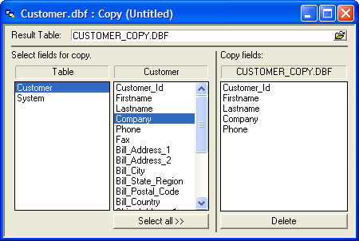
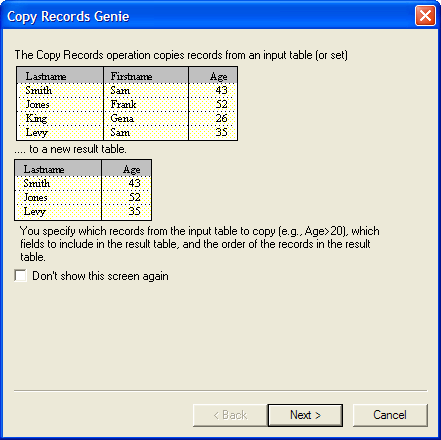
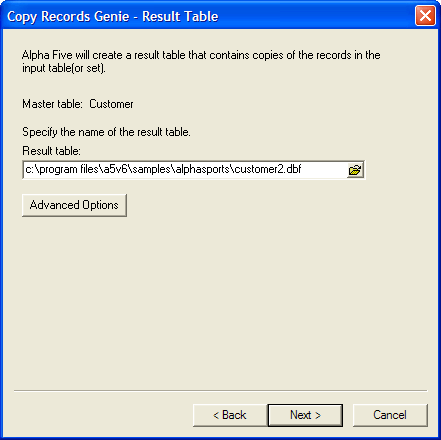
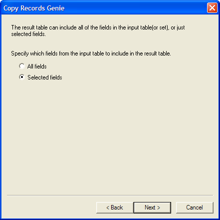
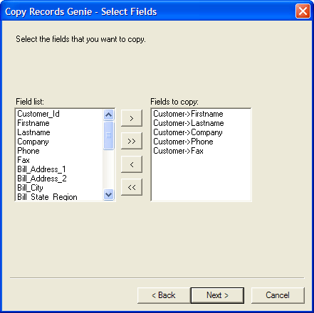
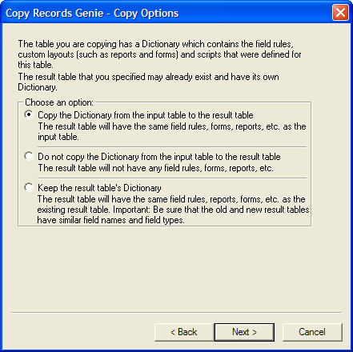
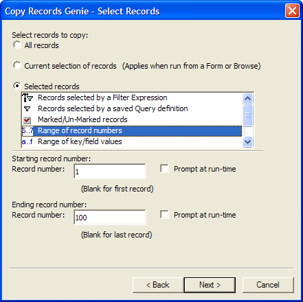
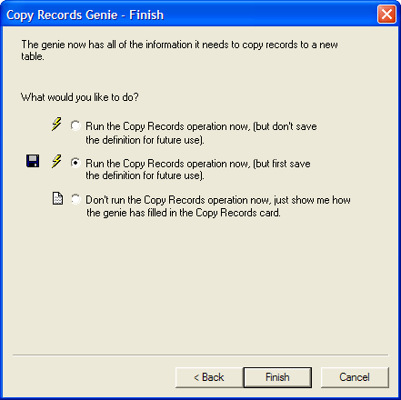

Copy Operations
The Copy operation is a flexible tool for creating a result (destination) table using the fields and field-data from the master (source) table. If the master table is a set, the Copy operation lets you use fields from all of the tables in the set, not just the parent table. When you run an Copy Operation for a set which has one-many child tables, if no fields from the one-many child tables are included in the Copy definition, Alpha Anywhere only copies one instance of each parent record.
Copy operations can be used to:
Create a result table that contains only select records from the master table : When you define a copy operation, you can choose which fields to include in the result table. This lets you create smaller tables using only the fields you need.
Create a result table that contains only select fields from the master table : You can set filter criteria for a Copy operation so that only the records that meet the criteria are included in the result table. You can also set order criteria, so that records are copied in a particular order.
Create result-fields using calculated fields defined for the master table : The calculated fields you have defined for the master table can be included in the result table as regular, non-virtual fields.
Convert a set to a single table : There may be some instances in which you want to convert a set to a single table. This can be accomplished by using a Copy operation. Alpha Anywhere takes the fields you select from each of the tables in the set, and uses them to create a single result table.
 Note : If you want
to copy all of the fields from a single table, you may instead wish to
use the Duplicate command found by right-clicking
on a table in the Control Panel.
Note : If you want
to copy all of the fields from a single table, you may instead wish to
use the Duplicate command found by right-clicking
on a table in the Control Panel.
To do this:
Click the Tables/Sets tab in the Control Panel.
Right-click the table you want to copy, and select Duplicate from the right-click menu.
|
|
Copying to an existing table risks overwriting not only existing data, but also layouts, fields rules, report and other application components stored in the table's data dictionary. |
To define a new Copy operation:
Click the Operations tab on the Control Panel.
Click the New button. The Create New Operation dialog box appears.
Select "Copy Records" as the operation, and select the table you want to copy.
Click the Create button to display the Copy Builder or click Create Using Genie to display the Copy Genie (see Using the Copy Genie ).

Copy Builder
Choosing Fields
Enter a new table name for Result Table.
Select the fields you want to include by double-clicking on them. To copy all the fields, click the Select All button.
To remove a field from the Copy Fields list, select the field and press Delete.
Copy Settings
For additional options, click the Copy Settings button on the toolbar.
Check the appropriate choices on the Copy Properties dialog box. Picture
{kind=link}

Copy Properties Dialog Box
Selecting Records
The records that are copied, and the order in which they are added to the result table, is determined by the current range settings. To change these settings, click the Select Records button on the toolbar.
In the Select Records dialog box, choose either:
"All records" - copy all records from the Transaction table to the Master table.
"Base operation on current selection of records"
"Specify record selection criteria"
If you selected "Specify record selection criteria", then make a selection from the list box.
Enter the filtering (a logical expression ) and ordering (a character expression ) criteria required by your choice.
Click OK.

Select Records Dialog Box
Optionally, click Save to display the Save copy settings as... dialog box.
Enter the name of the operation into the Name field and click OK.
Click
 to run the operation.
to run the operation.
Click Next > to continue.

Enter then name of the new table in the Result table field. Picture
{kind=link}

Optionally, click the Advanced Options button to display the Advanced Options dialog box.
Choose whether to warn before overwriting an existing table.
Click OK to continue or Cancel to discard your input.
Click Next > to continue.

Indicate whether you want to copy All fields or Selected fields.
Click Next > to continue.

If you chose Selected fields in the previous dialog box, move the fields you wish to copy from the Field List to the Fields to copy list.
Select a field name and in the Field list and click
 to
add it to the Fields to copy list.
to
add it to the Fields to copy list.Select a field name in the Fields to copy list and click
 to remove it from the Fields to copy
list.
to remove it from the Fields to copy
list.Click
 to
add all fields to the Fields to copy list.
to
add all fields to the Fields to copy list.Click
 to
remove all fields from the Fields to copy list.
to
remove all fields from the Fields to copy list.Click Next > to continue.

Indicate whether you want to copy the input table's dictionary, and if so, whether to overwrite the result table's dictionary.
Click Next > to continue.

Indicate which records to copy.
If you clicked the Selected records radio button, make a selection from the list box. Otherwise, continue with step 16.
Enter the filter and order criteria required by your choice.
Click Next > to continue.

Indicate whether you want to run the operation now, save the operation and then run it, or view the settings of the Copy Records Card.
Click Finish.

If you selected Run the Copy Record operation now, (but first save the definition for future use), the Save copy settings as... dialog box will appear.
Enter the name of the operation into the Name field and click OK.
If you selected Don't run the Copy Records operation now, just show me how the genie has filled in the Copy Records card, the Copy Records Card will appear.
Optionally, click Save to display the Save copy settings as... dialog box.
Enter the name of the operation into the Name field and click OK.
Optionally, click the Run button on the toolbar to run the operation.
See Also
Overview of Batch Operations, Table Operation Methods